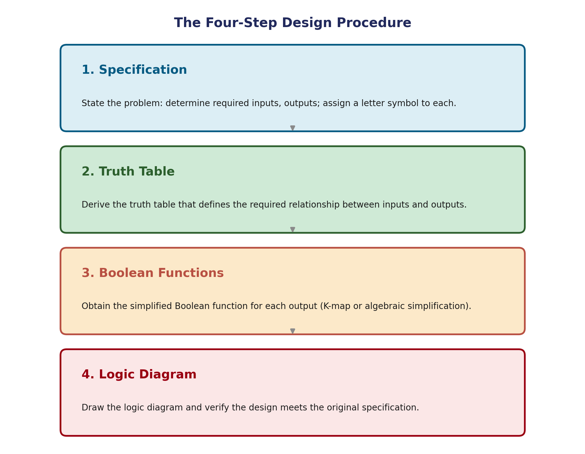

Design Procedure
Design is the opposite of analysis: you start with a description of what's needed, and end with a working logic diagram. Every circuit in this unit — adders, comparators, decoders, encoders, multiplexers — was built using this same procedure.
The Procedure
- Specification. State the problem. Decide how many inputs and outputs you need, and give each one a letter symbol.
- Truth table. Write the truth table that shows the required output for every input combination.
- Simplify. Find the simplified Boolean function for each output — using a K-map (Unit 1) or algebra.
- Draw and verify. Draw the logic diagram, then check it's correct — ideally by re-deriving the truth table from the diagram and comparing it to step 2.

Worked Example 1 — Full Design Cycle
Specification: design a circuit with two inputs A, B. The output F should be 1 whenever exactly one of the inputs is 1.
Step 1 — Specification: two inputs (A, B), one output (F). F = 1 when exactly one input is 1.
Step 2 — Truth table:
| A | B | F |
|---|---|---|
| 0 | 0 | 0 |
| 0 | 1 | 1 |
| 1 | 0 | 1 |
| 1 | 1 | 0 |
Step 3 — Simplify: reading the 1-rows gives F = A′B + AB′. The two minterms sit diagonally opposite on the K-map, so they can't be grouped together — this is already the simplest form.
Step 4 — Draw and verify: two NOT gates, two AND gates, one OR gate. Re-deriving the truth table from this diagram gives the same table as step 2 — the design is correct.
Same circuit as in Analysis Procedure — and the single XOR gate it's equivalent to
Worked Example 2 — 3-Input Majority Function
Specification: design a circuit with three inputs A, B, C and one output F. F should be 1 whenever 2 or more of the inputs are 1 (a "majority" function).
Step 2 — Truth table → minterms: F is 1 for the rows with two or three 1s: m3 (011), m5 (101), m6 (110), m7 (111). So F(A,B,C) = Σm(3,5,6,7).
| A | B | C | F | minterm |
|---|---|---|---|---|
| 0 | 0 | 0 | 0 | m0 |
| 0 | 0 | 1 | 0 | m1 |
| 0 | 1 | 0 | 0 | m2 |
| 0 | 1 | 1 | 1 | m3 |
| 1 | 0 | 0 | 0 | m4 |
| 1 | 0 | 1 | 1 | m5 |
| 1 | 1 | 0 | 1 | m6 |
| 1 | 1 | 1 | 1 | m7 |
Step 3 — Simplify with a K-map:
K-map for the majority function: three overlapping pairs give F = AB + AC + BC.
All three pairs share cell m7 — that's fine, a 1-cell can be part of more than one group.
F = AB + AC + BC
Step 4 — Draw and verify: 3 AND gates (one per term in F) feeding a single OR gate — 4 gates total.
Majority circuit: three AND gates feeding one three-input OR gate.
Common Pitfalls
- Skipping the re-derivation in step 4. A mistake in simplifying can produce a circuit that looks right but doesn't match the specification — always check.
- A K-map group can overlap another group. The same 1-cell can belong to more than one group, as it does with m7 above.
Applications
- Every circuit in the rest of this unit — adders, comparators, decoders, encoders, multiplexers — is built using this same four-step procedure.
- Majority circuits like the one above are used when 3 identical systems compute the same result, and you want to pick the answer that at least 2 of them agree on.